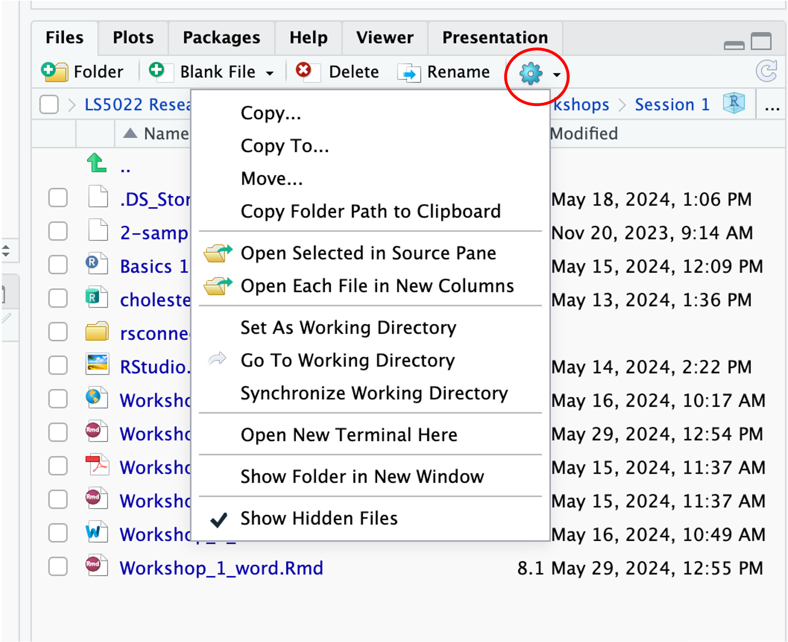

{kind=link}
{kind=link}
getwd()Workshop 1 - Introduction to R
Downloading & Preparing R and RStudio
Introduction
This first workshop aims to introduce you to R and RStudio. R is the programming language; RStudio is the IDE (Integrated Development Environment) that makes R easier to use. You must first download R and then Download RStudio (R is a requirement for RStudio to work).
We are going to use RStudio on the cloud (Posit Cloud) during the workshop sessions. However, the free version only permits 25 hours of computing time per month, and I strongly recommend that you also set up R and RStudio on your own laptop and save the cloud files that we create on the cloud version to your laptop.
You can, of course, also bring your own laptop to the workshops and work on that there.
The 1st tab below shows you how to set up RStudio on the cloud.
The 2nd tab shows you how to set up R and RStudio on your own laptop.
NB You can use RStudio on a university computer from AppsAnywhere, but it is not ideal. the latest versions of R and RStudio are not installed, and you have to install previously used packages every time you use it.
This is the version of RStudio that we will use in the workshops. However, you should download and save all of the files we use to your own laptop and practice using RStudio on your laptop (see next tab).
Go to Posit Cloud (click on this link)
Figure 1 shows the opening Posit cloud page:

- Select ‘Get Started’
- You will see a range of plan options: select ‘Cloud Free’ by selecting “Learn more’ and then sign up to create your own account. In future, use your ID details and password to login.
- Select the blue icon in the top right corner that says ‘New Project’. Create a new RStudio project called ‘LS5022 Biostatistics’ (you are allowed 25 projects on the free plan). It is here that we will work and save our files in all of the workshops.
Go to RStudio (click on this link)

- Install R
- Select the version for your computer (mac or Windows)
- Click on the first link for R-(followed by the latest version number).pkg to download the installation package
- For mac users, note which type of Mac you have: Intel or silicon (M1-3). You can find out by clicking on the apple symbol in the top left of your screen and select ‘About this mac’.
- Follow the installation instructions
- Install RStudio
Note: R updates quite regularly, and so it is a good idea to check the latest version of R from time to time. To update, simply repeat the instructions above to install the latest version of R.
1. RStudio looks like this
Figure 2 shows the arrangement of the four windows in RStudio:
Click on the green ‘+’ symbol at the top left of the screen and select ‘R Script’. You will now see 4 areas of the RStudio page:
- The Code Editor at the top left area where you will do most of your work and store your code. Here you can write R code and notes to yourself. You can also save the R code and notes in an .R file
- The area below it (bottom left) is the R Console, and is essentially like R without RStudio. It is where the R code that you type in the Editor above and its output appears when you run the code.
- Top right is the Workspace environment where you can see opened objects and data.
- At the bottom right is the the File Directory and where you can navigate to your desired folder, create and delete folders and also see installed packages. Use the Files tab to select the folder in which you wish to save your work.
- Then click on the More cog and select
Set as Working Directory. This is now your working folder (you will see the code run in the R Console).
- Then click on the More cog and select
2. Global Settings
You can set your preferred default ‘Global’ settings that RStudio will always use (eg font, text wrapping, default working directory etc):
You can always check what your working directory is by typing this simple code into the R Console and running it (press ‘Enter’):
3. To start a new R session, open an R Script using the green ‘+’ sign at the top left of RStudio
You are now ready to use RStudio.
In the next tabs, you will do some simple calculations in R and import an Excel file to R. Most of the work that we will do will involve carrying out statistocal analyses on data imported from Excel files.
The first thing I want to do is to load some packages that enhance R for what we are about to do. R has a base language, but packages significantly enhance and add power to what R can do.
Install packages (click to expand/collapse):
You will need to install the following packages for today by running the following code line. Copy and paste them into the Script editor and run them:
install.packages(c("tidyverse", "rio", "psych"))These packages will be saved in RStudio to be used in future.
NB You can always check which packages you have installed by clicking on ‘Packages’ in the File Directory window.
Once packages are installed you call them by using the library() function:
NB You need to do this every time you start a new session.
Call the packages to use them in your session
library(tidyverse)
library(rio)
library(psych)NB If R ever says that a package does not exist, it means you need to install it before loading it with library().
If you want to check what packages are installed, the File Directory window has a tab called ‘Packages’. Installed packages are listed. Packages that have been loaded have a tick by them.
1. To create an object called ‘greeting’ with text
greeting <- "Hello World"
greeting- 1
- Store ‘Hello World’ into an object called ‘greeting’
- 2
-
To see the content of the object, type its name.
2. Some basic arithmetic!
Addition: the calculation is stored in an object called ‘add’
add <- 2+4
add- 1
- Here, the sum of 2+4 is stored in an object called ‘add’
- 2
- To see the content of the ‘add’ object type its name.
Division:
div <- 6/2
div
3. Create a vector and store in an object called vector1
vector1 <- c(2,4,5,6,7,8,10,11,14,15,21,25,34,35)
vector1- 1
- The numbers are ‘concatenated’ into a column and stored in an object called ‘vector1’
- 2
- Type the name of the object to see its contents.
4. Calculate mean and standard deviation
mean1 <- mean(vector1)
mean1
sd1 <- sd(vector1)
sd1- 1
-
Use the
mean()function to calculate the mean of vector1 & store it inmean1 - 2
-
See the mean value in
mean1 - 3
-
Use the
sd()function to calculate the standard deviation ofvector1& store it insd1 - 4
-
See the sd value in
sd1
5. Get descriptive statistics of the vector1 data
vector1 |>
describe()
Here, mean(), sd() and describe() are called functions. All functions are followed by () where arguments can be placed to specify what action is to be performed. We load particular packages to make use of their functions than enhance R.
6. Save your r file on the cloud in your working directory.
Once saved, you can download it to your own laptop:
- Click on the More cog icon and select
Export... - Choose a name and save it. It will save to your Downloads folder on your computer.
- Move it to a folder where you are saving your work for this module.
7. Import an Excel file (in ‘tidy’ format)
- Download the file called 2-sample_cholesterol.xlsx from Canvas to your Downloads folder.
- In RStudio cloud, select
Uploadin the Files Directory. - Check the directory where it is to be saved (change it if necessary with ‘Browse…’)
- Choose your file by browsing to the Downloads folder and selecting the xlsx file
- Click ‘OK’ and you should see the excel file in your working directory in RStudio
NB if you are using your own laptop, you can simply locate the Downloads folder in the Files directory and move the file to your working directory using the ‘More’ cog icon and ‘Move…’

- Now import the xlsx file and store it as a dataframe called chol_df
This code uses the rio package to use the import() function.
It loads the Excel file and stores the data in a data frame object called ‘chol_df’
chol_df <- import("2-sample_cholesterol.xlsx")
class(chol_df)NOTE: this is saved as a data frame. This is the type of object that we will be working with.
You should now see the chol_df object in the Environment window (top right) in RStudio.
You can view it by simply clicking on the object name in the Environment.
8. Save the chol_df object as an RData file in your desired folder
(NB This code will save the file to wherever your current working directory is set).
This means the data frame is saved and you don’t have to import it every time you open RStudio! Just type in R (or just copy and paste the script):
save(chol_df, file="chol_df.RData")- 1
- Saves the chol_df dataframe as an RData file called chol_df.RData
To open the RData file in future to get the dataframe, simply type
load(file = "chol_df.RData")